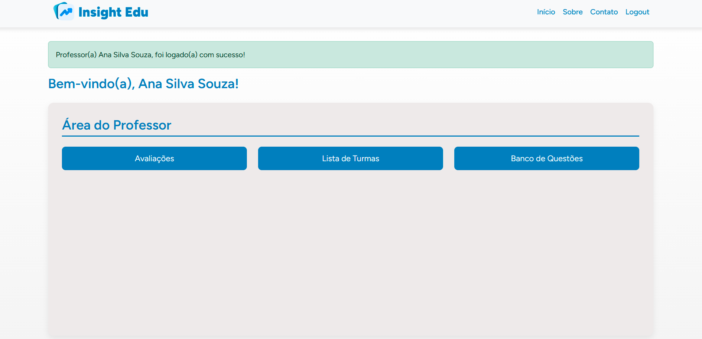

A plataforma educacional para transformar a gestão escolar e o aprendizado de alunos.
O InsightEdu foi desenvolvido para atender às necessidades de escolas e educadores na organização e gestão do aprendizado dos alunos. A plataforma oferece uma série de funcionalidades para otimizar a comunicação entre professores, alunos, coordenadores e gestores.
Com o InsightEdu, é possível gerenciar turmas, realizar o acompanhamento de desempenho dos alunos e até mesmo gerar relatórios detalhados para análises mais profundas. A plataforma foi criada com uma interface intuitiva e responsiva, para facilitar a navegação de todos os usuários.
Veja como o InsightEdu se apresenta na tela, com uma interface fácil de usar e recursos acessíveis para todos.
Confira alguns depoimentos de professores, alunos e gestores que estão usando o InsightEdu.